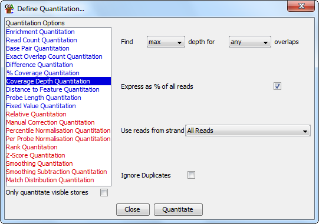

The coverage depth quantitation quantitates your data based on the depth of overlapping reads within each probe.
This kind of quantitation can be useful for resequencing experiments to find underrepresented regions. It is also useful in a variety of experiments to filter out sequences which are overrepresented. These are often the result of biased amplification or mismapping and can skew the results of any subsequent analysis.

The options you have for this module are: